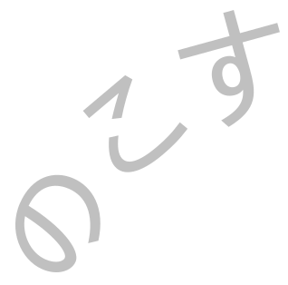
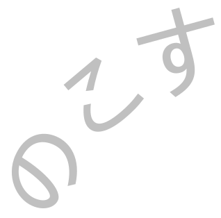

本サイトは、創業1720年の着物メーカー問屋「矢代仁」が、350周年に向けてスタートしたプロジェクトYSNの記録です。
This website is a record of the project YSN, initiated by the kimono manufacturer wholesaler YASHIRONI, which has been in business for 1720 years and is celebrating its 350th anniversary.
本サイトは、創業1720 年の着物メーカー問屋「矢代仁」が、350周年に向けてスタートしたプロジェクトYSNの記録です。
This website is a record of the project YSN, initiated by the kimono manufacturer wholesaler YASHIRONI, which has been in business for 1720 years and is celebrating its 350th anniversary.

 
